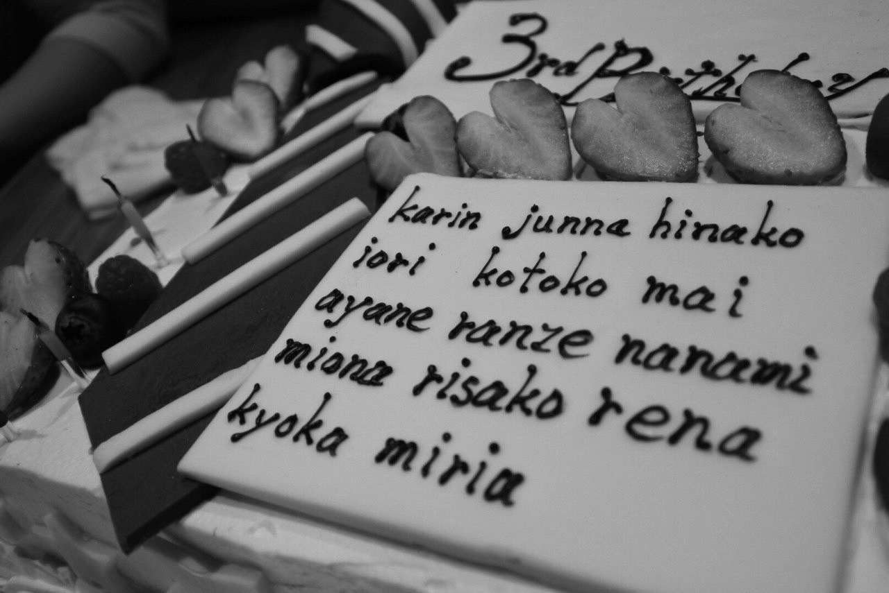
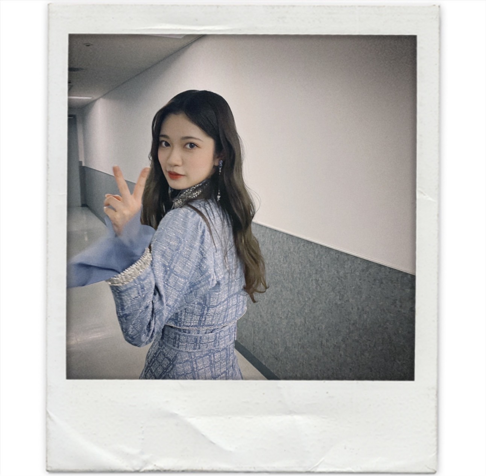

2021/0917Fri
今回マシンガンレインでセンターというポジションに選んでもらいました。
ユニット曲など含めて5曲目となります。
それぞれ視点が違うから思う事考える事
解釈は人それぞれだと思いますが
いつもグループとしての分岐点となる曲で
センターに選んでもらっている気が私はしていました。
初めてのセンターを経験した
ボーダーという楽曲では乃木坂46初の研究生制度というものを2期生が経験し
そこから全員が乃木坂46になる瞬間の曲でした。
当時、自分の立場をふまえて
正直センターに選ばれるとは
思ってもいなかったですし
いまだにこの曲を歌うときだけは
当時を思い出して緊張します。
そのくらい
先輩や同期からのプレッシャーを感じて
なにか背負わなきゃいけないという
使命を感じていました。
でも、今では先輩方も大切に歌ってくれたり
2期生みんなで歌える曲になっていること
嬉しく思っています。
色んな立場の人に響くような歌詞
希望に溢れたような曲調
私はとても大好きです。
これからもみんなで歌い継いで欲しいです。
ブランコという楽曲では
武道館ライブをおこないました。
少しずつ乃木坂46が坂を登っていると
メンバー自身も噛み締めている中
当時高校生でようやく乃木坂46のメンバーだと
認められたばかりの私には複雑な心境でした。
この頃は自分の中にある
かっこいいを求められすぎて
笑えなくなる事もありました。
楽しいはずの
メンバーみんなでの撮影で笑いたいはずなのに
笑ったらみんなが思い描いてる
私の雰囲気が壊れちゃうんじゃないかなとか
強がってないと周りのみんなが立たないんじゃないかなとか
日常からその想いが心のどこかに染み込みすぎて
自分の本来の気持ちを見失いそうになってしまったり日々葛藤していました。
そんな経験があったからこそ
ここでは語りきれないくらい
乃木坂46と共に寺田蘭世として
大きな前進をし続け
坂をのぼっていくことができたと思います。
光が強い程、影も濃ゆくなるように
本当に大変なことも多かったです。
日々全力で振り返る時間もないままに
ただがむしゃらに歩んできましたが
辛かったことも
何故かこれで良かったと今では思えています。
あの瞬間があったから今の私があって
あの瞬間は安易かもしれませんが
私の1つの青春だったのだと
何度かセンターにたたせてもらって
何回も立てる人なんかそうそういません。
だからこその嬉しさと
何回も経験してしまったからこそ
沢山成長したからこそ視野は広がり
このパワーを色んなところにぶつける機会が
欲しかったなと同時に思うことも増えました。
常に私の頭の中には乃木坂46の事がありました。
小さな一歩でもと一日も歩みを止めたりせず
頑張ってまいりました。
そして今回
最後にまたセンターというポジションに立つことになりました。
またと使える自分が複雑です。
センターです。と発表されたとき
ここで頑張りすぎたのかもしれない
ここで頑張ったからこそ選ばれた
いろんな捉え方ができて
色々な感情が押し寄せてきました。
でも、長く乃木坂46にいるからこそ思えた
私なりの答えは選ばれたのだと
色んな意見があるとは思います。
選ばれた理由は私達もいつも知り得ません
自分で自分を探していつも答えを探しています。
当事者の答え
これが、私の宿命だったんだとそう捉えました。
それらは自分の力だけでは
どうにもならないこともありました。
ここで語れる事は全てではない
それは他のメンバーもそうだと思います。
だから是非、優しくしてあげてください。
きっと見えないところで努力している子もいます。
自分の大切な人には
優しく愛や感謝を伝えてあげてください。
私はそれに沢山支えられて頑張れました。
誰にも言えない悩みも山ほどありました。
でも、全てこの順序じゃなかったら
私はもっと違う私だったかもしれない
そう思うと私はここまで乃木坂46 2期生として
かっこよく生きてこれた事を誇りに思っています。
きっとこの経験は生きて
これからの長い長い人生もっともっと素敵なものになります。
私はここから離れることを決心しました。
乃木坂46を卒業します。
大好きな場所でした。
最後まで私らしく終えたいです。
完成されたMVをみて
自分の背中に乃木坂46の文字があった時に
こんなに大きくなったんだなって
初めて自分を少し褒めてもいいんじゃないかなと思えました。
記念すべき10周年にこの場所に立てた事は誇りに思います。
ファンの皆さん心からありがとう
色んな巡り合わせで出逢えた大切な人達です。
見つけてくれてありがとう。
これからも私はどこに居てもこのまま変わらず
頑張るのでお互いこの先の長い未来も
無理はしすぎないで
適度に頑張っていきましょう。
本当に出逢ってくれてありがとう。
これからも皆さん仲良くしてください。
先輩の皆さん
先に卒業しちゃってごめんなさい。
同志のように扱ってくれて
時には優しく
時には先輩として、ライバルとして
対等に扱ってくれてありがとうございました。
沢山、楽しかった事も辛かった事もありましたが
ふとした瞬間のくだらない時間が
とても楽しかったなーと
卒業生も多くなってしまい
たまにあの時に戻りたいなって思う事も
ここ数年は多かったです。
またいつか他の卒業生も含めて
みんなで思い出話で盛り上がる日楽しみにしてます。
集めるのはかりんちゃんに任せたいと思います。
メンバーのみんなとは
これから毎日のようには会えなくなるけど
乃木坂46がもっともっと
大きくなることを願っています。
頑張ってる人に
頑張れっていうのは私は苦手だけど
何年後かに私ここにいたんだよーって
乃木坂46の2期生だったんだよーって自慢できるくらい
ずっと乃木坂46が坂を登り続けられるグループである事を願っています。
5期生ちゃんも心優しい子が沢山いますように。
でも、今の私があるのは
ママ、パパのお陰。
こんなに素敵に産んでくれてありがとう。
お陰で沢山の素敵な経験と素敵な人に出逢えました。
この中身も見た目もママとパパそっくりで
2人に似てるなーって感じられたとき
愛おしく思う瞬間があります。
2人に似たからこそどんな事があっても
自分らしく居たかったのかもしれません。
優しく、自由でもありあたたかさがある
人としてとても尊敬できる最高の2人です。
本当に大好きで私の自慢であり誇りです。
これからはもっと幸せにしてあげるので
宜しくー。☺️✨
今月9月はお誕生日月でもあるのですが
お誕生日は貰うだけでなくありがとうを
沢山伝えられる日だと私は思っているので
残り少ない時間ではありますが
明日が永遠の別れというわけではありませんし
一緒に毎日を噛み締めつつも今まで通り穏やかに
楽しんで過ごしたいです。
感謝をより伝えられる期間にしたいです。
これからも仲良くしてください。☺️✨


2021/09/17
乃木坂46 寺田蘭世


コメント(2042)
お疲れ様
これからもずっと応援しています！
最後まで応援するね
これからもよろしくお願いします
これからも応援してます！
今まで乃木坂にいてくれてありがとう❗
これからもずっと応援し続けます。
ずっとずっと大好きです！
卒業してもキラキラ輝く蘭世を楽しみにしてます(^^)
ついにこの日が来てしまいましたね。
もちろんこれからも今まで通りに、いや今まで以上に応援し続けます！最後まで全力ならんぜぴんでいてください。
またコメントしますね！
蘭世のこと、ずっと大好きだよ
乃木坂に入ってくれてありがとう。蘭世が綴る言葉の一言一句すべてが愛に溢れていて大好きだった。
本当に悲しいけど、、
笑顔で見送れるように今から気持ち保てるように気合い入れる！！最後まで楽しもうね！！！！！
ずっと応援し続けます！
最後まで駆け抜ける蘭世を応援します。
今までお疲れ様。
これからもよろしく。
応援してます！！
悲しいけど、今までとても楽しめたよ
ありがとう
またいつか会える日を…
今はとりあえず一言
「ありがとう」
乃木坂のファンになってすぐに蘭世のファンになりました。
今までたくさんの元気をもらいました。ありがとう！
これからもずっと応援し続けるので、頑張ってください！
今まで元気をくれてありがと！
これからも元気を下さい♪
8年、9年同じこと続けて弱音も吐かない尊敬してます。
蘭世の言葉にはすごく心に響くものがあるからこんなにも尊敬してきたし言われた言葉大切にしてます。
明日からもしっかり頑張ります頑張ろう！！
寂しいよー
残りの期間も楽しんでください！
蘭世の選んだ道を僕は応援します！
残りの期間も頑張ろう！ えいえいおー！
今までほんとにありがとう。
似たタイプのいない唯一無二の存在でした。
なんて言ったらいいか分からないけどとにかく素敵な存在だった事には変わりありません。
ありがとう
これからもずっとずっと応援してます。
乃木坂を好きになれた理由が蘭世さんで、本当によかったです。
幸せになってください
これから先もずっと応援しています！
卒業おめでとうございます！
けんたっきー。より
正直すごく寂しいですが、これからも応援します。
ずっと大好きです。
正直聞きたくなかった言葉だけど、それでも、未来の蘭世の幸せを願わずにはいられない
ボーダー、ブランコ、滑走路、マシンガンレイン…
どれも蘭世に引き込まれている俺がいました
寂しくなるけど、これからも蘭世らしくいてください
今まで乃木坂にいてくれてありがとう！
推しててよかったと思わせてくれてありがとう！
改めて、卒業おめでとう！！！
卒業ですか…
覚悟はしていました
言いたいことは色々ありますが
お疲れ様でした。ありがとう。
この二言に尽きます。
あなたを推して約3年間
本当に毎日が楽しかったです。
これから会える機会は減ってしまうけど
心の中でずっと応援しています。
今までありがとうございました！
ユースケ
コメントする